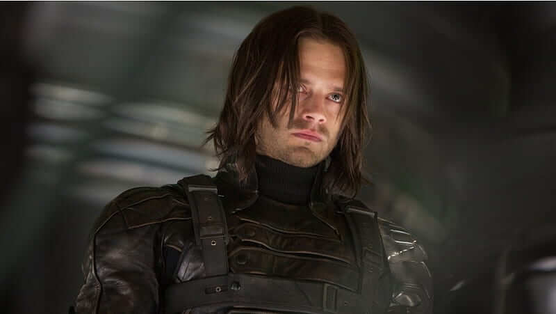
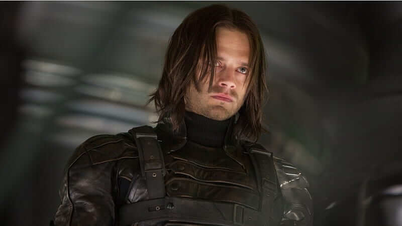

Conheça os Personagens do universo cinematografico da MARVEL
(Projeto educacional sem fins lucrativos
As informações citadas não são 100% veridicas)
Qual grupo deseja conhecer?
Vingadores
Capitão america, Homem de ferro, Homem aranah, Homem formiga, Falcão, Hulk, Thor, Viuva negra, Gavião arqueiro...
Quarteto fantastico
Senhor fantastico, Mulher elastica, Coisa e Tocha Humana
Guardioes da galaxia
Senhor das estrelas, Groot, Gamora, Drax, Rocket Raccoon, Mantis..
Inumanos
Raio Negro, Medusa, Dentinho, Crystal, Triton, Karnak...
Eternos
Sersi, Druig, Gilgamesh, Kingo, Phastos, Sprite, Ajak, Makkari, Ikaris e Thena
X-men
Charles xavier, Ciclope, Jean Grey, Anjo, Fera, Homem de gelo, Wolverine, Tempestade, Noturno, Colossus, Kitty Pryde, Vampira...
Alguns herois que possa conhecer

 



Gavião Arqueiro (nome original em inglês, Hawkeye) alter-ego de Clint Barton, é um personagem de quadrinhos americanos da Marvel Comics. Criado por Stan Lee e Don Heck, o herói fez sua primeira aparição em Tales of Suspense #57 (Setembro de 1964), onde era um vilão ajudando até então vilã, Viúva Negra.

Viuva negra
A personagem é interpretada por Scarlett Johansson e sua história é bem parecida com os quadrinhos: ela originalmente era uma agente russa que se tornou vilã, mas quando a conhecemos, ela já é uma espiã a serviço dos EUA e da S.H.I.E.L.D..
Bucky Barners
Barnes foi encontrado pela HYDRA e pela União Soviética, que fez novos experimentos no combatente, dando-lhe habilidades sobre-humanas. Depois de perder a memória de sua vida passada e adquirir um novo braço cibernético, ele se torna um agente da HYDRA conhecido como o Soldado Invernal.
Capitão America
Era 1941 e o criador de histórias em quadrinhos Joe Simon queria colocar um rosto no patriotismo “ianque”: assim criou o “Capitão América”, um jovem do Brooklin transformado em super-herói e que representa “tudo o que faz com que os Estados Unidos sejam o melhor lugar do mundo para se viver”.
Falcão
Apresentado originalmente como um ajudante do Capitão América nos quadrinhos, Sam Wilson alçou voo fazendo sua própria jornada do herói. Originalmente conhecido como o Falcão, ele chegou a assumir o manto de Sentinela da Liberdade, e esse arco finalmente está sendo adaptado para o Universo Cinematográfico da Marvel.